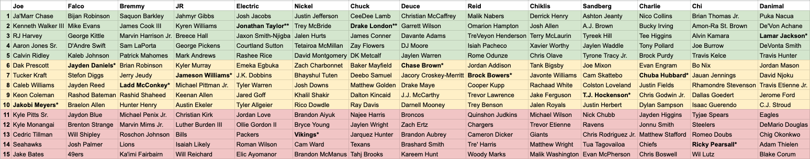

Draft of Manhands 2026
Tuesday, September 8, 7:30pm
Draft Order
- Chi
- Charlie
- Nickel
- JR
- Bremmy
- Sandberg
- Chuck
- Electric
- Reid
- Joe
- Deuce
- Danimal
- Chiklis
- Falco
Keeper Penalties for 2026 (Transition to Auction)
If you keep a player, locate the penalty amount one round earlier than the round in which they were drafted/kept in 2025. That amount will be deducted from your $200 auction budget.
- Round 1: $55
- Round 2: $38
- Round 3: $27
- Round 4: $21
- Round 5: $17
- Round 6: $13
- Round 7: $10
- Round 8: $7
- Round 9: $5
- Round 10: $4
- Round 11: $3
- Round 12: $2
- Rounds 13-15: $1
2025 Draft (for Keeper Purposes)

Keeper Eligibility
- Round numbers are from the 2025 Draft.
- Traded players are listed under the manager who originally drafted them.
Joe
Round 4: Aaron Jones Sr.: eligible
Round 5: Calvin Ridley: ineligible, drop on 10/26/2025, 02:11:36
Round 6: Dak Prescott: eligible
Round 7: Tucker Kraft: ineligible, drop on 11/19/2025, 02:56:15
Round 8: Caleb Williams: eligible
Round 9: Keon Coleman: eligible
Round 10: Jakobi Meyers (keeper year 1): eligible
Round 11: Kyle Pitts Sr.: eligible
Round 12: Kyle Monangai: ineligible, drop on 10/02/2025, 12:03:17
Round 13: Cedric Tillman: ineligible, drop on 10/05/2025, 02:11:21
Round 14: Seahawks: eligible
Round 15: Jake Bates: ineligible, drop on 10/22/2025, 07:50:30
Falco
Round 4: D'Andre Swift: eligible
Round 5: Kaleb Johnson: ineligible, drop on 09/20/2025, 09:44:27
Round 6: Jayden Daniels (keeper year 1): ineligible, drop on 11/05/2025, 02:43:18
Round 7: Stefon Diggs: eligible
Round 8: Jayden Reed: ineligible, drop on 09/17/2025, 02:29:38
Round 9: Rashod Bateman: ineligible, drop on 09/17/2025, 02:29:38
Round 10: Braelon Allen: ineligible, drop on 10/01/2025, 21:53:00
Round 11: Jaydon Blue: ineligible, drop on 09/17/2025, 02:29:38
Round 12: Brenton Strange: ineligible, drop on 10/08/2025, 02:28:19
Round 13: Will Shipley: ineligible, drop on 09/10/2025, 02:40:10
Round 14: Josh Palmer: ineligible, drop on 09/05/2025, 11:54:44
Round 15: 49ers: ineligible, drop on 10/01/2025, 02:37:51
Bremmy
Round 4: Sam LaPorta: ineligible, drop on 11/21/2025, 18:03:43
Round 5: Patrick Mahomes: ineligible, drop on 12/20/2025, 02:43:20
Round 6: Brian Robinson: ineligible, drop on 10/08/2025, 10:42:06
Round 7: Jerry Jeudy: eligible
Round 8: Ladd McConkey (keeper year 1): eligible
Round 9: Rashid Shaheed: ineligible, drop on 12/26/2025, 19:42:20
Round 10: Hunter Henry: eligible
Round 11: Michael Penix Jr.: ineligible, drop on 11/19/2025, 02:56:15
Round 12: Marvin Mims Jr.: ineligible, drop on 10/08/2025, 02:28:19
Round 13: Roschon Johnson: ineligible, drop on 09/24/2025, 02:27:38
Round 14: Lions: ineligible, drop on 09/17/2025, 02:29:38
Round 15: Ka'imi Fairbairn: eligible
JR
Round 4: George Pickens: eligible, traded from Rough Ridaz to Team Jackal on 10/14/2025, 09:58:25
Round 5: Mark Andrews: eligible
Round 6: Kyler Murray: ineligible, drop on 10/12/2025, 11:54:01
Round 7: Jameson Williams (keeper year 1): eligible
Round 8: Michael Pittman Jr.: eligible
Round 9: Keenan Allen: eligible
Round 10: Austin Ekeler: ineligible, drop on 09/12/2025, 08:15:52
Round 11: Christian Kirk: ineligible, drop on 10/22/2025, 02:31:29
Round 12: Luther Burden III: ineligible, drop on 09/11/2025, 04:38:26
Round 13: Bills: ineligible, drop on 09/05/2025, 22:29:17
Round 14: Isaiah Likely: ineligible, drop on 09/11/2025, 04:37:11
Round 15: Will Reichard: ineligible, drop on 10/09/2025, 10:50:10
Electric
Round 2: Jonathan Taylor (keeper year 2): eligible
Round 4: Courtland Sutton: eligible, traded from UnrulyGrazingAlpacas to Los Pendejos on 11/22/2025, 09:41:41
Round 5: Rashee Rice: eligible
Round 6: Emeka Egbuka: eligible
Round 7: J.K. Dobbins: eligible, traded from UnrulyGrazingAlpacas to Tommy Kramer's Beer on 10/24/2025, 02:21:54
Round 8: Tyler Warren: eligible
Round 9: Jared Goff: ineligible, drop on 12/13/2025, 13:25:58
Round 10: Tyler Allgeier: eligible
Round 11: Jordan Love: eligible
Round 12: Ollie Gordon II: ineligible, drop on 10/12/2025, 15:05:33
Round 13: Packers: ineligible, drop on 10/04/2025, 14:28:52
Round 14: Roman Wilson: ineligible, drop on 09/05/2025, 14:40:51
Round 15: Elic Ayomanor: ineligible, drop on 10/26/2025, 08:57:11
Nickel
Round 4: Tetairoa McMillan: eligible
Round 5: David Montgomery: eligible
Round 6: Zach Charbonnet: eligible, traded from Los Pendejos to UnrulyGrazingAlpacas on 11/22/2025, 09:41:41
Round 7: Bhayshul Tuten: eligible
Round 8: Josh Downs: ineligible, drop on 09/29/2025, 11:53:49
Round 9: Khalil Shakir: eligible
Round 10: Rico Dowdle: ineligible, drop on 09/24/2025, 02:27:38
Round 11: Brandon Aiyuk: ineligible, drop on 10/17/2025, 14:46:25
Round 12: Bryce Young: ineligible, drop on 09/12/2025, 17:04:47
Round 13: Vikings (keeper year 1): ineligible, drop on 10/29/2025, 02:37:34
Round 14: Cam Ward: ineligible, drop on 08/26/2025, 02:10:13
Round 15: Brandon McManus: ineligible, drop on 10/01/2025, 02:37:51
Chuck
Round 2: Drake London (keeper year 2): eligible
Round 4: Zay Flowers: eligible
Round 5: DK Metcalf: eligible
Round 6: Baker Mayfield: eligible
Round 7: Deebo Samuel: eligible
Round 8: Matthew Golden: ineligible, drop on 11/27/2025, 14:22:17
Round 9: Dalton Kincaid: eligible
Round 10: Ray Davis: ineligible, drop on 10/01/2025, 02:37:51
Round 11: Najee Harris: ineligible, drop on 09/24/2025, 02:27:38
Round 12: Jaylen Wright: ineligible, drop on 09/04/2025, 07:22:40
Round 13: Jarquez Hunter: ineligible, drop on 09/24/2025, 02:27:38
Round 14: Texans: eligible
Round 15: Tahj Brooks: ineligible, drop on 09/13/2025, 02:12:18
Deuce
Round 4: DJ Moore: eligible
Round 5: Jaylen Warren: eligible, traded from The Deuce Squad to Los Pendejos on 09/23/2025, 23:02:16
Round 6: Chase Brown (keeper year 1): eligible, traded from The Deuce Squad to Who the F is Cullen Loeffler? on 10/16/2025, 10:48:26
Round 7: Jacory Croskey-Merritt: ineligible, drop on 11/19/2025, 05:56:30
Round 8: Drake Maye: eligible
Round 9: J.J. McCarthy: ineligible, drop on 09/17/2025, 06:28:23
Round 10: Darnell Mooney: ineligible, drop on 11/08/2025, 02:27:22
Round 11: Broncos: eligible
Round 12: Zach Ertz: ineligible, drop on 10/08/2025, 02:28:19
Round 13: Brandon Aubrey: eligible
Round 14: Brashard Smith: ineligible, drop on 09/10/2025, 02:40:10
Round 15: Kareem Hunt: eligible, traded from The Deuce Squad to Who the F is Cullen Loeffler? on 10/16/2025, 10:48:26
Reid
Round 4: Isiah Pacheco: eligible, traded from Team Jackal to The Deuce Squad on 10/31/2025, 15:03:35
Round 5: Rome Odunze: eligible
Round 6: Jordan Addison: ineligible, drop on 12/07/2025, 08:53:34
Round 7: Brock Bowers (keeper year 1): eligible, traded from Team Jackal to D+ Draft. Don’t forget the + on 09/30/2025, 09:18:07
Round 8: Cooper Kupp: ineligible, drop on 10/22/2025, 02:31:29
Round 9: Trevor Lawrence: ineligible, drop on 09/30/2025, 09:36:09
Round 10: Trey Benson: ineligible, drop on 10/22/2025, 02:31:29
Round 11: Quinshon Judkins: eligible
Round 12: Chargers: ineligible, drop on 09/24/2025, 02:27:38
Round 13: Cameron Dicker: ineligible, drop on 09/24/2025, 02:27:38
Round 14: Tre' Harris: ineligible, drop on 09/02/2025, 22:40:49
Round 15: Woody Marks: eligible
Chiklis
Round 4: Xavier Worthy: eligible
Round 5: Chris Olave: eligible
Round 6: Tank Bigsby: ineligible, drop on 09/18/2025, 21:44:57
Round 7: Javonte Williams: eligible
Round 8: Rachaad White: eligible
Round 9: Jake Ferguson: eligible
Round 10: Jalen Royals: ineligible, drop on 10/01/2025, 02:37:51
Round 11: Michael Wilson: ineligible, drop on 10/08/2025, 10:57:56
Round 12: Trevor Etienne: ineligible, drop on 09/18/2025, 21:42:00
Round 13: Giants: ineligible, drop on 09/11/2025, 08:57:49
Round 14: Matthew Wright: ineligible, drop on 08/26/2025, 21:02:26
Round 15: Malik Washington: eligible
Sandberg
Round 4: Jaylen Waddle: eligible
Round 5: Tyrone Tracy Jr.: ineligible, drop on 10/08/2025, 02:28:19
Round 6: Joe Mixon: ineligible, drop on 10/04/2025, 16:05:32
Round 7: Cam Skattebo: ineligible, drop on 11/05/2025, 08:19:06
Round 8: Colston Loveland: eligible
Round 9: T.J. Hockenson (keeper year 1): ineligible, drop on 11/15/2025, 02:12:07
Round 10: Justin Herbert: eligible, traded from D+ Draft. Don’t forget the + to Team Jackal on 09/30/2025, 09:18:07
Round 11: Nick Chubb: ineligible, drop on 11/26/2025, 02:56:15
Round 12: Ravens: ineligible, drop on 10/08/2025, 02:28:19
Round 13: Chris Rodriguez Jr.: ineligible, drop on 10/10/2025, 16:09:58
Round 14: Tua Tagovailoa: ineligible, drop on 09/17/2025, 11:45:50
Round 15: Evan McPherson: ineligible, drop on 11/05/2025, 06:33:12
Charlie
Round 4: Tony Pollard: eligible
Round 5: Brock Purdy: ineligible, drop on 11/05/2025, 02:43:18
Round 6: Evan Engram: eligible
Round 7: Chuba Hubbard (keeper year 1): ineligible, drop on 11/05/2025, 02:43:18
Round 8: Justin Fields: eligible
Round 9: Chris Godwin Jr.: ineligible, drop on 11/08/2025, 22:53:59
Round 10: Dylan Sampson: ineligible, drop on 10/01/2025, 20:04:38
Round 11: Jayden Higgins: ineligible, drop on 10/04/2025, 19:01:34
Round 12: Jonnu Smith: eligible
Round 13: Matthew Stafford: eligible
Round 14: Chiefs: ineligible, drop on 11/05/2025, 02:43:18
Round 15: Chris Boswell: ineligible, drop on 12/07/2025, 08:53:40
Chi
Round 4: Joe Burrow: ineligible, drop on 10/15/2025, 16:21:37
Round 5: Travis Kelce: eligible
Round 6: Bo Nix: eligible
Round 7: Jauan Jennings: eligible
Round 8: Rhamondre Stevenson: eligible
Round 9: Dallas Goedert: eligible
Round 10: Isaac Guerendo: ineligible, drop on 09/17/2025, 14:09:03
Round 11: Tyjae Spears: ineligible, drop on 10/04/2025, 02:13:10
Round 12: Steelers: eligible
Round 13: Romeo Doubs: eligible
Round 14: Ricky Pearsall (keeper year 1): eligible
Round 15: Wil Lutz: ineligible, drop on 11/01/2025, 02:27:30
Danimal
Round 3: Lamar Jackson (keeper year 1): eligible
Round 4: DeVonta Smith: eligible
Round 5: Travis Hunter: ineligible, drop on 11/01/2025, 10:02:41
Round 6: Jordan Mason: eligible
Round 7: David Njoku: ineligible, drop on 10/22/2025, 09:00:38
Round 8: Travis Etienne Jr.: eligible
Round 9: Jerome Ford: ineligible, drop on 09/10/2025, 09:43:52
Round 10: C.J. Stroud: ineligible, drop on 09/10/2025, 09:44:17
Round 11: Eagles: ineligible, drop on 11/19/2025, 17:17:32
Round 12: DeMario Douglas: ineligible, drop on 08/26/2025, 23:51:22
Round 13: Chig Okonkwo: ineligible, drop on 09/10/2025, 09:45:13
Round 14: Adam Thielen: ineligible, drop on 10/01/2025, 08:55:46
Round 15: Blake Corum: ineligible, drop on 08/26/2025, 02:10:13